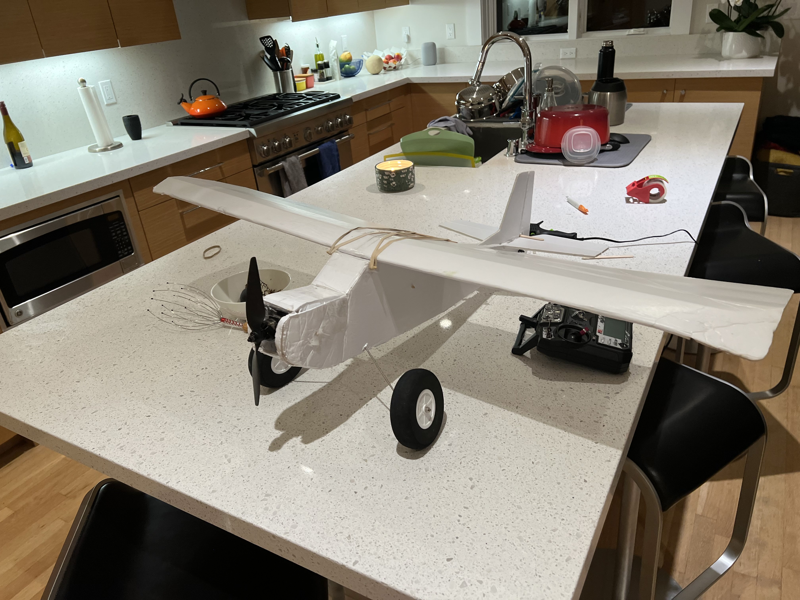
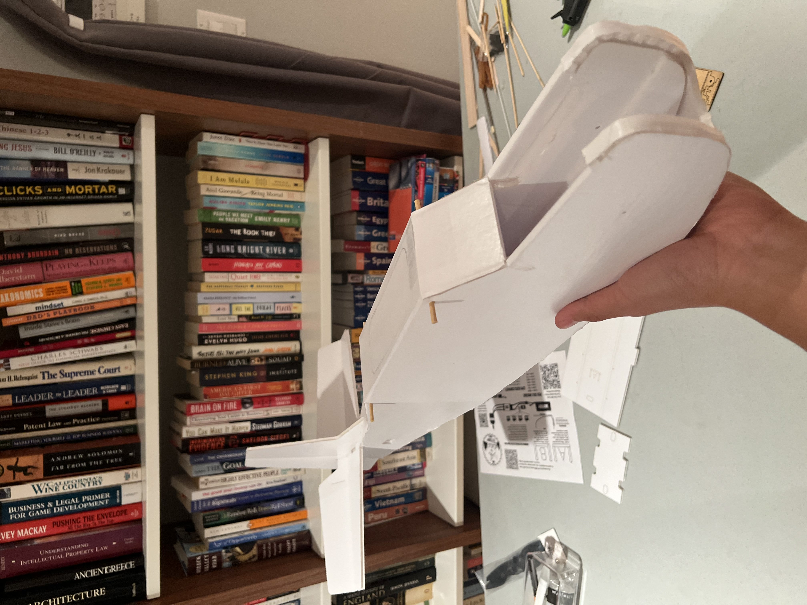

RC Aviation Project
Flite Test Tutor
I built a Flite Test Tutor as a practical trainer aircraft to fly with friends, using the build as a way to get more comfortable with RC aircraft setup, repairability, and real-world flight preparation. The project combined a foamboard airframe, removable electronics, and a straightforward trainer layout that could survive beginner mistakes and be repaired quickly after testing.
I used Flite Test's Power Pack B for the propulsion and electronics package, then integrated the motor, ESC, servos, receiver, linkages, landing gear, and battery placement into the airframe. The main engineering work was less about inventing a new aircraft and more about making the kit build clean, balanced, serviceable, and ready for actual flights with other people learning alongside me.
The Tutor was a fun reminder that good mechanical design often shows up in small details: straight control surfaces, clean hinge lines, accessible electronics, secure skewers and rubber bands, and enough room around the power system to inspect or swap parts without tearing into the plane. It was a social build, but it still rewarded the same habits I use in larger projects: careful assembly, checks before operation, and fast iteration after testing.
Power Pack B Integration
The Power Pack B setup gave the plane a compact, matched electronics package for a trainer-sized airframe. I laid out the motor and prop at the nose, routed the ESC and receiver inside the fuselage, installed the servos for predictable control throws, and kept the battery accessible so balance could be adjusted before flying.
That integration step turned the foamboard structure into a working aircraft system. It required checking the center of gravity, confirming control direction, keeping wiring clear of moving parts, and making sure the wing and landing gear could be removed or repaired without fighting the rest of the build.

Foamboard Build
The airframe came together through folded foamboard parts, glue joints, spars, skewers, rubber bands, and simple alignment checks. I focused on keeping the fuselage straight, the tail square, and the wing mounting repeatable so the plane would be predictable when it left the ground.
Working at this scale made the design tradeoffs very immediate. Small errors in alignment, control linkage, or weight placement can show up quickly in flight, so the build process doubled as a useful lesson in inspection, preflight discipline, and building something that can be repaired after a rough landing.
